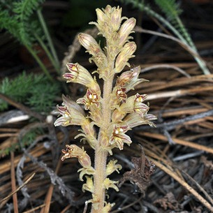
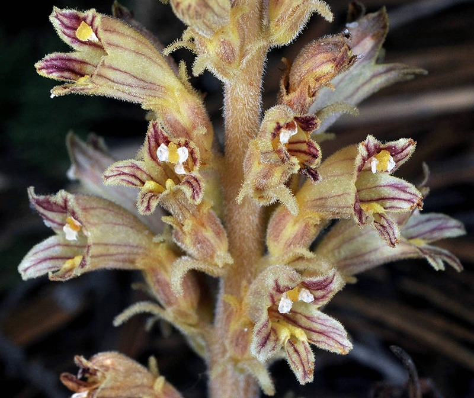

Aphyllon pinorum
Common name
Conifer Broomrape
Family
Orobanchaceae
Family common name
Broomrape Family
Blooms
May - October
Habitat
Rocky soils, open forests, below 7000'. Roots attach to ocean spray (
Holodiscus
), not conifers
Range Map
OR Flora